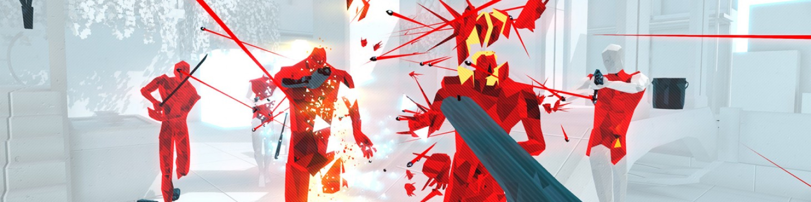

SUPERHOT
Superhot is an independent first-person shooter (FPS) video game developed and published by Superhot Team. Although the game follows traditional first-person shooter game mechanics, with the player trying to hit enemy targets using guns and other weapons, time within the game advances at normal speed only when the player moves; this creates the opportunity for the player to assess their situation in slow motion and respond accordingly, making the gameplay similar to strategy video games. The game is presented in a minimalist art style, with enemies in red and weapons in black, set against the white and gray environment.